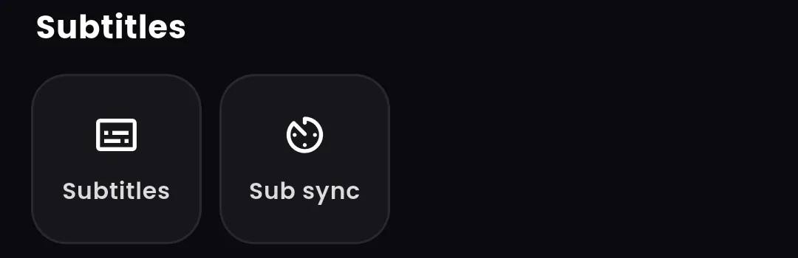

Video Player Mein Subtitle Kaise Lagaye? (Android, Step by Step)
▶ Google Play se Vidnexa lein
Movie dekh rahe hain aur dialogue samajh nahi aa raha? Subtitle lagana bahut aasan hai. Is guide mein dono tarike hain: video ke andar wala subtitle on karna, aur alag se .srt file lagana.

Tarika 1: Video ke andar wala subtitle on kariye
Bahut si MKV movies mein subtitle pehle se andar hota hai, bas band hota hai.
- Video chalaiye aur screen par ek baar tap kariye.
- Player Controls › Subtitles (ya CC icon) dabaiye.
- List mein se apni bhasha ka track chuniye, jaise English ya Hindi.

Tarika 2: Alag se .srt subtitle file lagaiye
- Apni movie ke exact version ke liye subtitle file download kariye (aksar .srt).
- Subtitle file ko us folder mein rakhiye jahan video hai.
- File ka naam bilkul video jaisa rakhiye:
Movie.2024.mkvke saathMovie.2024.srt. - Video kholiye. Subtitle na dikhe toh CC menu se track chuniye.
Subtitle aage ya peeche chal raha hai?
Iska matlab hai subtitle kisi doosre version ka hai. Vidnexa Player mein Player Controls › Subtitles › Sub sync se timing aage-peeche kariye. Agar farak movie ke saath badhta jaaye, toh apne version ka subtitle download kariye.
Subtitle mein ajeeb akshar ya dabbe dikh rahe hain?
Yeh text encoding ki problem hai, jo Hindi aur doosri bhashaon ke subtitle mein aam hai. Computer par .srt file kholkar UTF-8 mein save kariye, phir dobara try kariye.
Kaun se subtitle format chalte hain?
Vidnexa Player SRT, SSA, ASS aur VTT subtitle padhta hai, video ke andar ho ya alag file mein. Blu-ray se liye gaye image wale subtitle (PGS) har player mein nahi chalte.
Aksar poochhe jaane wale sawal
Video mein subtitle kaise on kare?
Video chalate waqt screen par tap kariye, CC (subtitle) icon dabaiye aur apni bhasha ka track chuniye.
SRT file kaise lagaye?
SRT file ko video wale folder mein, bilkul video wale naam se rakhiye, phir video kholiye aur CC menu se track chuniye.
Subtitle late aa raha hai, kya kare?
Player ke subtitle sync option se timing aage-peeche kariye. Farak badhta jaaye toh apne movie version ka subtitle download kariye.
Vidnexa Player mein kaun se subtitle chalte hain?
SRT, SSA, ASS aur VTT, video ke andar ya alag file mein, subtitle sync ke saath.
Vidnexa Player free download kariye
4K/8K video, HDR+ picture modes, music, files aur photos — ek app, download free, sign-up ki zaroorat nahi.
▶ Google Play se download kariye